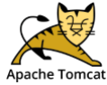
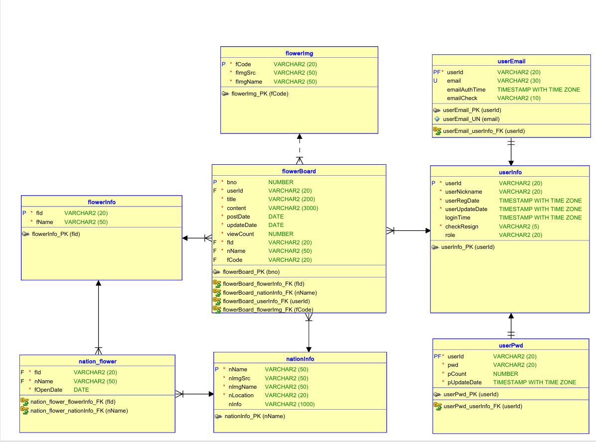

Mini Project01
프로젝트 기획서
×
| 구분 | Data |
|---|---|
| 프로젝트 참여자 | 배용우(PM), 정관수(PL), 강보름(DB담당자), 김재혁(통합담당자), 김지환(서기) |
| 프로젝트 목적 | 각 나라를 대표하는 꽃을 이미지와 함께 상세 내용을 쉽게 확인 가능, 분기별로 나누고 식물원 정보를 제공함으로써 여행 계획에 도움 |
| 프로젝트 설명 | 각 나라를 대표하는 꽃을 찾고 그 꽃의 이미지, 개화 시기 등의 상세 정보, 나라별 식물원을 찾기에는 수고로움이 든다. 이를 해소하기 위해 모든 내용을 통합한 사이트를 만들어서 간편하지만 다양하고 복합적인 정보를 제공하고자 한다. 국가와 꽃, 꽃의 상세 정보와 나라별 식물원등의 관광지를 매칭시킴으로써 해당 꽃에 관심이 생기거나 보고 싶어 하는 사람의 해외여행 계획에 도움을 줄 수 있다. |
| 프로젝트 개발환경 | Front :


Back : DB & Server :  Development Tools : |
| 기능 담당 |
배용우 - 회원가입,조회, adminPage
김재혁 - 회원수정, 회원탈퇴, 글수정, 글 삭제 정관수 - 로그인, 메인페이지,글쓰기 강보름 - 목록 |
개요 : 먼저 k-digital 트레이닝 교육을 받고 첫 팀 프로젝트를 제작하게 되었습니다. 먼저 첫 프로젝트라 팀원들이 누가 될까 설레임에도 가득한 채로 하나의 팀을 맡게 된 팀장을 하게 되었습니다.. 먼저 저는 군대 가기전에 개발자로 일을 해봣을 때 그 때 테이블 보고 “와 이렇게도 분리하면서 관리할수 있구나” 라고 기억이 들어서 그거를 첫 프로젝트에 적용해보기로 하였습니다. 먼저 타이틀은 worldFlower라는 제목이며, 세계의 꽃의 사진을 업로드하는 게시판을 구축하였습니다.
